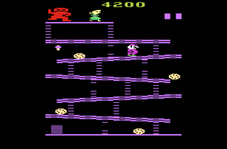

Donkey Kong es un plataformas primitivo (Se menciona que fue el primero, pero sus predecesores fueron Space Panic y Apple Panic). El juego se divide en 4 zonas. Cada una de ellas representa 25 metros del edificio que Donkey escaló. La última zona por tanto, está a 100 metros. Se necesita habilidad y paciencia para calcular los tiempos de subida de Jumpman. El juego pone como meta a Pauline, cuando llega ella, el jugador recibe una puntuación, basada en destruir objetos, evitarlos, completar la zona, recoger objetos, etc. Por cada 7000 puntos obtenidos, el jugador recibe tres oportunidades más. . 
Eljuego tuvo un gran éxito consiguiendo unos beneficios de 140 millones de euros. Coleco consiguió un acuerdo con Nintendo para hacer la versión doméstica del juego esas versiones son en ColecoVision, Atari 2600, Intellivision y VCS. Mientras, Atari consiguió los derechos de la versión en disquete de Donkey Kong, preparando para su Atari 800 una versión del juego. Al mes siguiente lanzan una versión en PC. Miyamoto crea una versión simplificada del juego para la portátil Game & Watch, y, en 1983, se creó la versión de Donkey Kong para NES. Otras versiones conocidas del juego fueron en Apple II, Atari 7800, Commodore 64, Commodore VIC-20, ZX Spectrum, Mini-Arcade, y TI-99/4A. Solo la versión de NES vendió 1,13 millones.